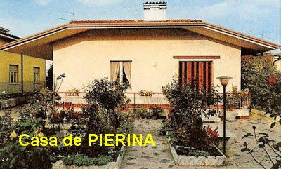
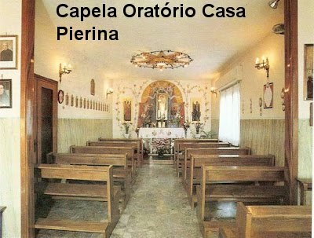
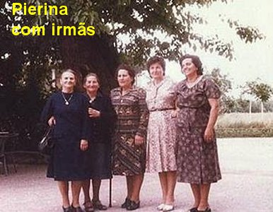
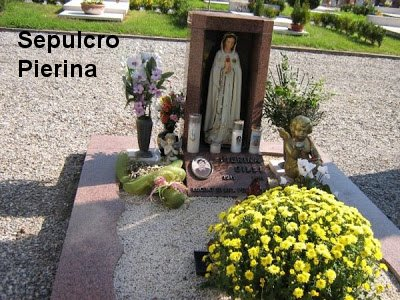
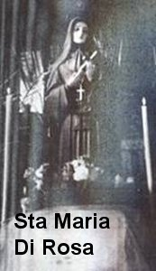
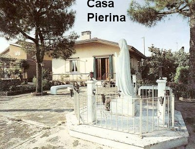
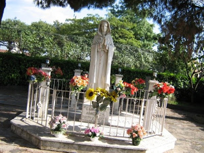

Vidente.
Vidente.MISSÃO CUMPRIDA
PIERINA EM SUA CASA
Enquanto estava morando numa
casa em Montichiari, próximo a Igreja, os devotos benfeitores construíram uma
casa num lugarejo próximo, e depois a doaram a Vidente.
Na verdade, a casa que foi construída e doada a Pierina, está localizada em Broschetti, dois quilômetros distantes do centro de Montichiari e aproximadamente três quilômetros da vila de Fontanelle, onde Pierina não podia ir, em face da proibição imposta pela autoridade eclesiástica que a impedia de ir à fonte, apesar dos desejos dela e da VIRGEM MARIA.
CASA DA FONTE
Na aparição do dia 27/Julho/1969, NOSSA SENHORA manifestou o desejo de que também acontecesse a construção da Casa da Fonte, que estava sendo apoiada pelo Monsenhor Rossi. Isto por que, esta casa seria destinada a recepção dos peregrinos, assim como preparo dos mesmos, para imersão no Tanque da Fonte. Então seria na verdade, uma excelente casa de apoio. E esta obra também foi construída pelos fiéis, ao lado da FONTE DA GRAÇA.
ORATÓRIO PARTICULAR – PEQUENA CAPELA
 No dia 17/Abril/1971, NOSSA
SENHORA também pediu a Pierina que fosse construída uma Capela particular, ou
seja, um Oratório para ela e os peregrinos, na casa que lhe foi doada em
Broschetti.
No dia 17/Abril/1971, NOSSA
SENHORA também pediu a Pierina que fosse construída uma Capela particular, ou
seja, um Oratório para ela e os peregrinos, na casa que lhe foi doada em
Broschetti.
Depois de pronta a Capela e devidamente decorada, no dia 25/Julho/1971, NOSSA SENHORA apareceu a Pierina na nova casa, apresentando um programa para um Cenáculo de Oração e um Convite para os peregrinos ali rezar o Rosário. De modo que a Capela auxilia verdadeiramente aos peregrinos que demandam a Fontenelle para rezar e suplicar a misericórdia Divina, assim como para quem vai visitar um local sagrado, onde a MÃE DE DEUS esteve e abençoou uma Fonte de Água, para restituir a saúde aos enfermos e doentes que têm fé no SENHOR.
DIVULGADOR DA DEVOÇÃO
Nesse período surgiu um grande
divulgador da devoção a NOSSA SENHORA ROSA MÍSTICA. Trata-se do Padre Taddeo
Laux, pertencente à Ordem Religiosa dos Padres Salvatorianos de Bad Wurzach,
na Alemanha. Ele começou a guiar os romeiros alemães para Fontanelle no ano de 1973
e continuou com todo entusiasmo até a sua morte em 1994. Também se especializou
na fabricação e divulgação das imagens de NOSSA SENHORA ROSA MÍSTICA. As imagens
chegaram a Roma, Argentina, Austrália, Brasil, e depois se espalharam por todo o
Mundo.
Padres Salvatorianos de Bad Wurzach,
na Alemanha. Ele começou a guiar os romeiros alemães para Fontanelle no ano de 1973
e continuou com todo entusiasmo até a sua morte em 1994. Também se especializou
na fabricação e divulgação das imagens de NOSSA SENHORA ROSA MÍSTICA. As imagens
chegaram a Roma, Argentina, Austrália, Brasil, e depois se espalharam por todo o
Mundo.
Durante a sua vida, Padre Taddeo foi agraciado com o precioso dom de ter tido diversas aparições de NOSSA SENHORA, que o auxiliou em situações particulares e também como estimulo para ter forças e disposição a prosseguir com sua obra.
EXCELENTE PONTO DE APOIO
A casa que Pierina ganhou de presente continua sendo, desde aquela época, um ponto de referência para os peregrinos. A vidente estava sempre pronta a interceder não só para quem pedia oração, mas, também para consolar, aconselhar e realizar obras de conversão do coração.
Atenciosamente ela sempre assistia a todos os doentes que chegavam à fonte. E fez isso por muitos anos, com amor e extremada dedicação.
PARTIU PARA A ETERNIDADE FELIZ
Os últimos anos da vida de Pierina Gilli foram entristecidos por várias doenças que voltaram a seu corpo, talvez como se fosse uma espécie de anúncio Divino, de que o seu tempo terrestre estava terminando. E os problemas de saúde foram tantos, que ela foi obrigada há passar os seus últimos meses de vida numa cadeira de rodas. No final de 1990, o seu estado de saúde se agravou, e Pierina morreu pacificamente na sua casa residencial, na localidade de Broschetti, no dia 12 de janeiro de 1991, com 80 anos de idade, e com sua missão integralmente cumprida, para a maior glória de DEUS e satisfação da VIRGEM MARIA.






